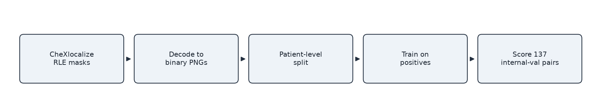
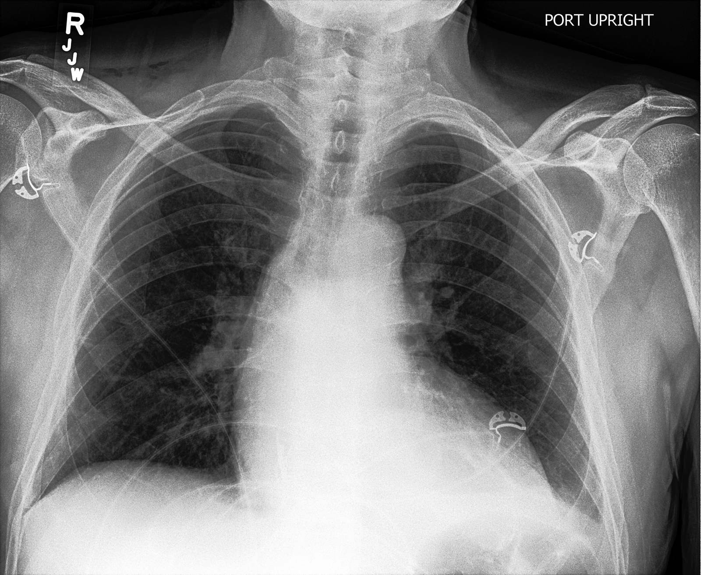
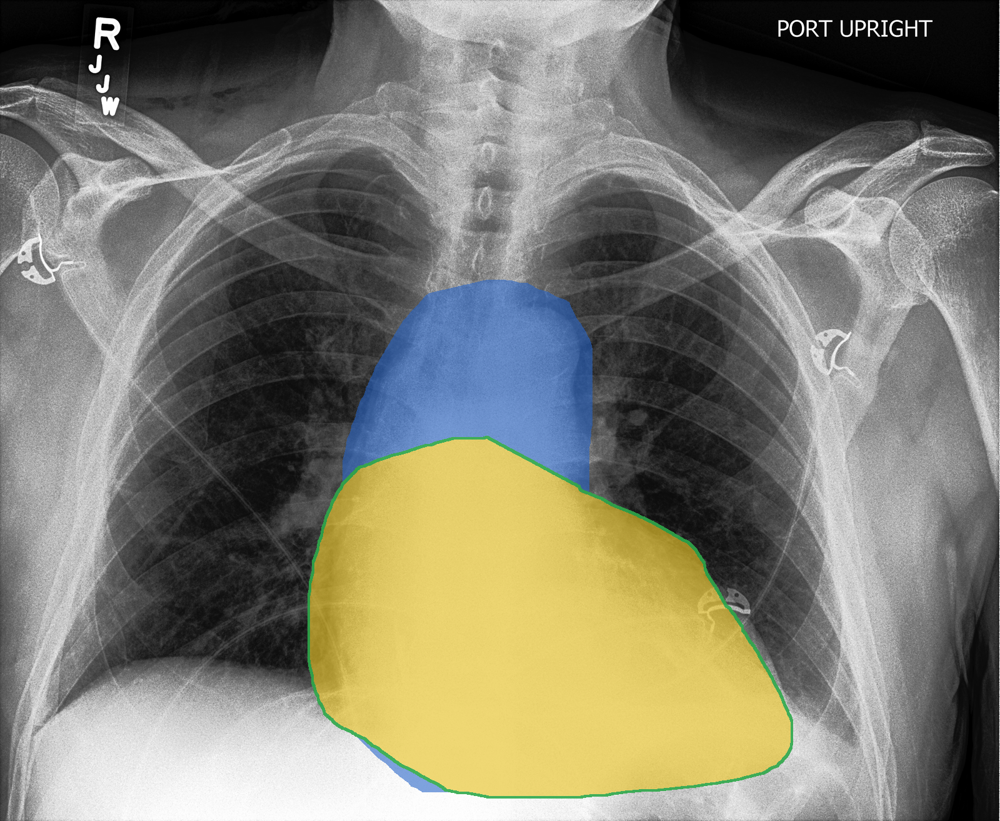

Multi-Pathology Chest X-Ray Segmentation
Evaluating pretrained and fine-tuned SAM 2.1 and MedSAM across 10 findings in CheXlocalize, with nnU-Net as an unprompted baseline.
White = ground truth; Navy = model prediction.
Project overview
CheXlocalize [1] provides radiologist localization annotations for ten findings on CheXpert [5] chest X-rays. In this project, I built a multi-label segmentation pipeline to evaluate SAM 2.1 [3] and MedSAM [4] before and after task-specific fine-tuning, with nnU-Net [2] as a separate unprompted supervised baseline.
Research question
Does task-specific fine-tuning improve prompted foundation models for chest X-ray pathology segmentation when approximate location is provided?
The ten segmentation targets are Atelectasis, Cardiomegaly, Consolidation, Edema, Enlarged Cardiomediastinum, Lung Lesion, Airspace Opacity, Pleural Effusion, Pneumothorax, and Support Devices.

Dataset and Preprocessing
CheXlocalize stores segmentation masks using run-length encoding (RLE), a compact way of representing labeled pixels. I decoded these annotations into binary masks for model training and evaluation.
For model development, the official validation set was split at the patient level into 161 training patients and 39 internal-validation patients, with no patient appearing in both sets.
Label handling
| Status | Meaning |
|---|---|
| VALID_POSITIVE | A non-empty localization mask is available. |
| VALID_NEGATIVE | The finding is confirmed absent; excluded from headline Dice results so empty masks do not inflate performance. |
| IGNORE | The finding is positive or uncertain but has no localization mask, so it is excluded. |
Overlapping findings
Some pathologies overlap within the same image. For example, Cardiomegaly and Enlarged Cardiomediastinum can share part of the same region.
Overlapping pathology annotations


- Green = Cardiomegaly
- Blue = Enlarged Cardiomediastinum
- Yellow = overlap
Because findings can overlap, each pathology was treated as a separate binary segmentation task, allowing the same pixel to belong to more than one pathology.
Methods
Three segmentation approaches were evaluated: an unprompted nnU-Net baseline and two prompt-based models, SAM 2.1 and MedSAM.
| Model | Input | Experiment |
|---|---|---|
| nnU-Net v2 | Chest X-ray | Supervised baseline |
| SAM 2.1 | Chest X-ray + oracle box | Pretrained vs. fine-tuned |
| MedSAM | Chest X-ray + oracle box | Pretrained vs. fine-tuned |
nnU-Net v2
nnU-Net was trained as a supervised baseline using only the chest X-ray as input. It predicted segmentation masks for all 10 pathologies without a location prompt.
SAM 2.1 and MedSAM
SAM 2.1 and MedSAM was evaluated before and after fine-tuning using the same oracle-box setup.
Why use an oracle box?
SAM 2.1 and MedSAM require a location prompt. The oracle box was generated from the ground-truth mask so that both the pretrained and fine-tuned models received the same approximate pathology location.
Results
All five model conditions were evaluated on the same 1,534 positive image-pathology pairs from the official CheXlocalize test set.
1. Official Test Performance
| Model | Setting | Dice | 95% CI | IoU |
|---|---|---|---|---|
| nnU-Net v2 | Unprompted baseline | 0.310 | [0.294, 0.326] | 0.234 |
| SAM 2.1 | Pretrained + oracle box | 0.646 | [0.635, 0.657] | 0.512 |
| SAM 2.1 | Fine-tuned + oracle box | 0.742 | [0.731, 0.753] | 0.630 |
| MedSAM | Pretrained + oracle box | 0.607 | [0.597, 0.618] | 0.467 |
| MedSAM | Fine-tuned + oracle box | 0.772 | [0.763, 0.781] | 0.664 |
Fine-tuning improved segmentation performance for both prompted foundation models on the official test set.
2. Fine-Tuning Gains
| Model | Pretrained Dice | Fine-tuned Dice | Gain | 95% CI |
|---|---|---|---|---|
| SAM 2.1 | 0.646 | 0.742 | +0.096 | [0.091, 0.102] |
| MedSAM | 0.607 | 0.772 | +0.165 | [0.158, 0.172] |
Fine-tuning gains were consistent between internal validation and the official test set: +0.099 vs. +0.096 for SAM 2.1 and +0.159 vs. +0.165 for MedSAM.
3. Performance by Pathology
Segmentation performance and the benefit of fine-tuning varied across pathologies.
Fine-tuning improvement by pathology

Mean Dice by pathology

4. Qualitative results
Qualitative examples show how fine-tuning changed the predicted masks and where segmentation remained difficult.


Training & Validation
Models were trained in PyTorch on an A100 GPU. Checkpoints were selected using internal-validation Dice, with early stopping after five epochs without an improvement of at least 0.001.
| Model | Selected checkpoint |
|---|---|
| nnU-Net v2 | Epoch 7 |
| SAM 2.1 | Epoch 12 |
| MedSAM | Epoch 4 |
Training and checkpoint selection

Discussion
Fine-tuning improved segmentation for both prompted models on the official test set, with Dice increasing from 0.646 to 0.742 for SAM 2.1 and from 0.607 to 0.772 for MedSAM. These gains were similar to those observed during internal validation, although performance varied across pathologies. A next step would be to replace oracle boxes with automatically predicted locations to evaluate a more realistic segmentation pipeline.
Limitations
SAM 2.1 and MedSAM received oracle bounding boxes, while nnU-Net was unprompted, so their absolute Dice scores are not a direct architecture comparison. Some pathologies had small test-set sample sizes, particularly Pneumothorax (n = 10) and Lung Lesion (n = 14). Multiple image-pathology pairs can also come from the same image or patient, so pair-level bootstrap confidence intervals may not fully account for this dependence. Finally, performance was evaluated on a single dataset, and external generalization remains to be tested.
References
- Saporta et al. Benchmarking saliency methods for chest X-ray interpretation. Nature Machine Intelligence (2022). 10.1038/s42256-022-00536-x. Dataset: 10.71718/hap9-kn94.
- Isensee et al. nnU-Net: a self-configuring method for deep learning-based biomedical image segmentation. Nature Methods 18, 203–211 (2021). 10.1038/s41592-020-01008-z.
- Ravi et al. SAM 2: Segment Anything in Images and Videos. International Conference on Learning Representations (2025). arXiv:2408.00714.
- Ma et al. Segment anything in medical images. Nature Communications 15, 654 (2024). 10.1038/s41467-024-44824-z.
- Irvin et al. CheXpert: a large chest radiograph dataset with uncertainty labels and expert comparison. AAAI (2019). 10.1609/aaai.v33i01.3301590.